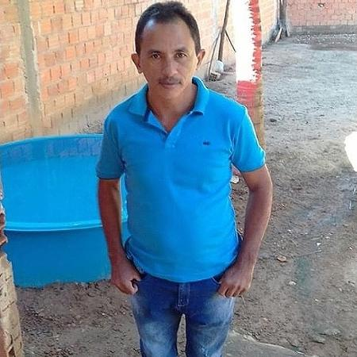

Ive been played soccer for a long time. I started when I was 6 years with some soccer classes on my school Adventista in Porto Alegre and I played soccer in that school for 7 years.

Ive been played basketball since the begning of the march 2025, when I started Its was just for help my ward that plays a little stake's championship, but I started to watch NBA videos, documentaries and etc. Basketball
Nowadays I havent been playing videogames in the same frequency that I used to play before because I dont feel that this time that I am using is actually usefull and good to waste, I dont know if this feeling is good or not but Im its better for me thinking in that way
One of my important goals on my life its learning new languagues for my work and for my trips around the world
Ive read a few books in my life for my own at the school and in my house and Ill make a list telling what are y favorite I ever read